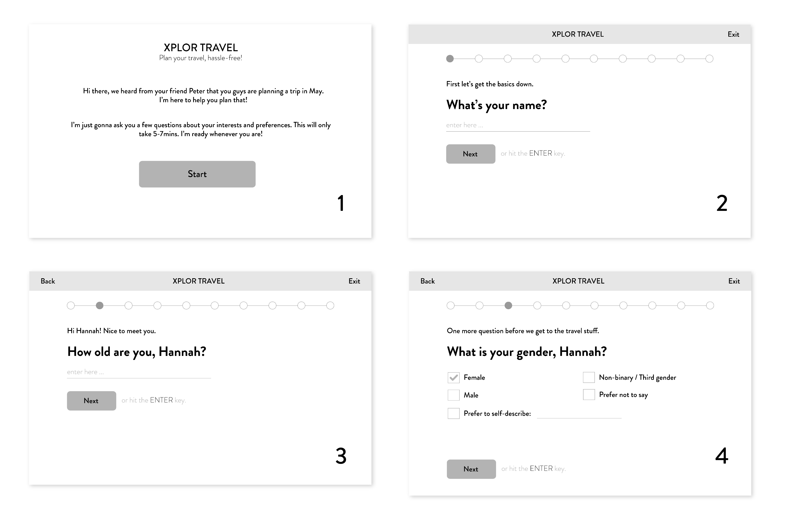
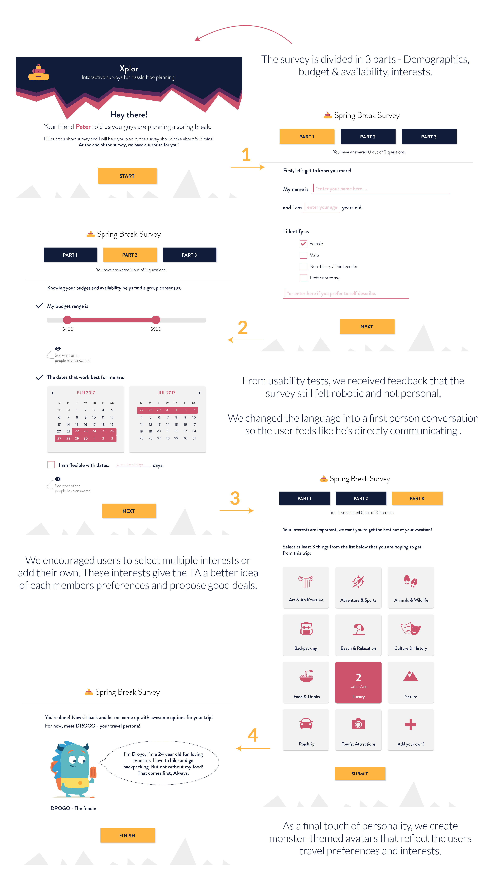

Xplor Travel

Role
Interaction and Visual Design Consulting
Team
Akshay Potnis, Jaee Apte, Namita Nisal, Varun Joshi
Client
University of Michigan
Timeline
Jan 2016 - Apr 2016
Problem
In group travel planning, groups must manually consolidate individual preferences with expectations in order to reach consensus and make decisions. In doing so, they are plagued by indecisiveness because they lack relevant information about their group as a whole. Invariably, one person always gets tired of waiting and steps up as the leader to makes decisions for the entire group.
Therefore, group travel planning is indefinite (i.e. back and forth communication), inefficient
(i.e. typically takes 6 weeks - 6 months to finalize plans) and authoritarian (i.e. one group leader makes decisions for the group)
Solution
We helped the Xplor team design a product that simplified communication between users and travel agents and improve user conversion rates. First through a series of questions, group members fill out their preferences individually. Then these responses are evaluated by the travel agent to come up with travel itineraries for the group. Thirdly, the responses stored through these surveys are also used to create individual travel profiles to be utilised at a later time.
What is Xplor?
When our clients brought Xplor to us, it was a consumer-facing product. A series of binary questions will be posed to each user and the software would create a travel plan that has group consensus.
The client's business goals pivoted and a travel agency came into picture. Now the project became B2C and Xplor would serve the travel agent.
Now Xplor will facilitate a better communication between the travel agent and the group members. It will reduce the turnaround time between interactions and provide travel agents with better data to help their customers.
What were some insights from user research?
As design consultants to Xplor, we proposed the following plan:
1. User research and customer discovery.
2. Identify pain points in current process.
3. Scope down and prioritize critical areas.
4. Provide a design solution.
5. Provide further recommendations.

Travel agent insights
"Travellers like being asked on an individual level."
User insights

"The bigger our group gets, the longer it takes to come to consensus. Everyone wants a say."
Identifying critical tasks and scoping
We created a workflow for the group planning process and identified pain points causing breakdown in the process.

We found that the biggest bottleneck in this process was communicating interests and preferences of individual group members to the travel agent. This was a critical part of the process that consumed the maximum amount of time and energy, and most customers would drop-out at this stage.
We presented our analysis to the client and his team. We laid out the breaks in the current flow and identified the severity of each one. We were able to convince the client of our proposal and the decision to focus our design on the first part of this process i.e. the initial client - customer communication.
Proposed workflow with Xplor

Design Decisions
After analysing the background research, user interviews and aligning to our client's business goals, following were the design decisions that drove our final design.
MAKE EACH GROUP MEMBER FEEL VALUED WHILE PLANNING.
Our most important decision was to make the user feel valued and welcomed into the entire planning process. By creating a an interest survey for each user, the travel agent can know the interests and preferences of every group member use that information to find them a perfect vacation. It also makes the group member valued and get the best out of this vacation. At the end of the day, it has to be a fun trip for everyone in the group.


After receiving feedback on our initial wireframes, we tried to make the survey personalized. Xplor is not a boring survey but rather a user's buddy trying to understand the user and find the best deal for him. Xplor was a manifestation of the travel agent. So the survey is conversational with simple click and drag interactions that work seamlessly for web and mobile. As a final touch of personality, we also created a travel monster persona for each user that reflects the user's interests at the end of the survey.

COMPLETE TRANSPARENCY THROUGHOUT THE PROCESS.
Keeping every group member in the loop about the status of the planning is extremely crucial for the travel agent to develop a long term relationship with the customer. Keeping the group members informed builds trust. Think of it like how great recruiters are transparent and responsive with a candidate at every step of the interview process, no matter the outcome.
So within the survey, every user can see the choices selected by other group members and use this information to make their decision. At a more subconscious level, this also works in the favor of getting group consensus because no one wants to be that one person who disagrees with the whole group!

EFFECTIVE COMMUNICATION CHANNELS IMPROVE EFFICIENCY.
From the travel agent interviews we had found that nearly 50% of their customers dropout during the first few rounds of communication. This back and forth communication via emails or phone calls is tedious and exhausting to everyone involved. To alleviate this situation we proposed a user dashboard for every group to keep a check on the status update. Whenever there's an update from the agent, the travel dashboard can be updated to reflect that change and users can be informed. This way, the user is not dependent on the travel agent, and the travel agent does not need to worry about the reaching out to the users individually. But since this was out of scope for our timeline, we handed them detailed recommendations for the next design iteration.
Conclusion
Xplor brought us on board to consult on their product and create design solutions. We helped them identify bottlenecks
and critical breakdowns in the current workflow. We proposed and designed a solution that captures individual interests of
the users and provides them to the travel agent to make informed decisions. Through this solution, we created a transparent
planning process and reduced the back and forth communication between the users and the travel agents.